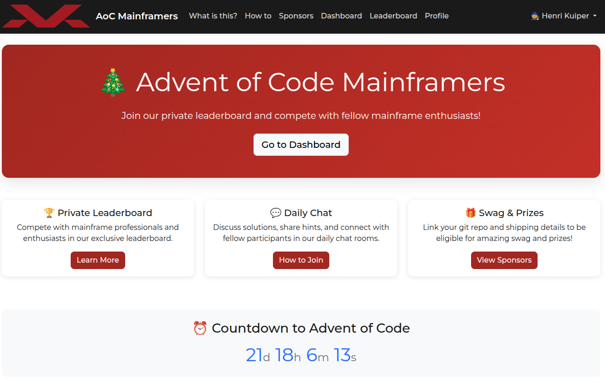
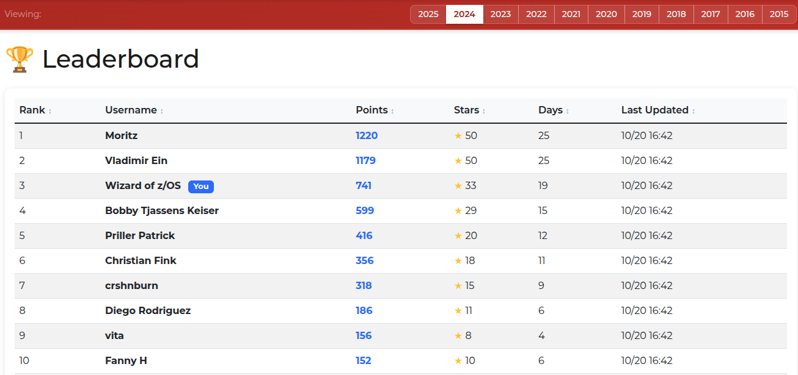
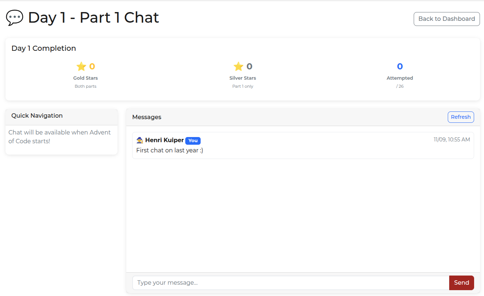
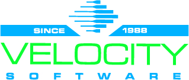
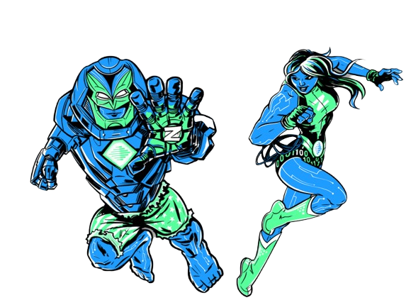

REXX the Halls
Festive Coding with Mainframe Languages
Holiday spirit & Mainframe Coding fun 👨🏻💻
Henri Kuiper, CTO @ Mainframe Society
Part of IBM ZDay 2025
Who Am I?
- CTO and co-founder at Mainframe Society
- Security Architect at Dutch Tax Administration
- Founder of zdevops
- 7 Year IBM Champion
- Mainframe Nerd
What's Advent of Code?
A global holiday coding tradition made by Eric Wastl
- 25 days of logic puzzles released every December
- Solve using any programming language
- Developers worldwide compete, learn, and share
- Fun, festive, and surprisingly addictive!
- All info: adventofcode.com
First ever challenge
2015 day one part one
Santa is trying to deliver presents in a large
apartment building. He starts on the ground
floor (0) and then follows the instructions one
character at a time.
( ==> go up one floor
) ==> go down one floor
The apartment building is very tall,
Santa will never find the top or bottom floors.
For example: ((( results in floor 3
To what floor do the instructions take Santa?Python Solution
instruction_set = "((((()(..."
floor = 0
for instruction in instruction_set:
if instruction == "(":
floor = floor +1
elif instruction == ")":
floor = floor -1
print("Santa is at floor: {}".format(floor))The Mainframe Twist
What if we solved them… on z/OS?
- Introducing Advent of Code for Mainframers (MFAOC)
- Solve the challenges in z/OS languages like REXX, COBOL, PL/I, or JCL
- Learn a new language, or polish up your skills
- Friendly competition, fame and swag
- This will be our 6th year
REXX Solution
/* REXX */
INST = "((((()(..."
floor = 0
do i = 1 to length(INST)
inst = substr(INST,i,1)
if inst = "(" then floor = floor + 1
if inst = ")" then floor = floor - 1
end
say "Santa is at floor" floorPL/1 Solution
SANTAFLOOR: PROC OPTIONS(MAIN);
DCL instructions CHAR(100) INIT('((((()(...');
DCL i FIXED BIN(31);
DCL floor FIXED BIN(31) INIT(0);
DCL c CHAR(1);
DO i = 1 TO LENGTH(instructions);
c = SUBSTR(instructions, i, 1);
IF c = '(' THEN
floor = floor + 1;
ELSE IF c = ')' THEN
floor = floor - 1;
END;
PUT SKIP LIST('Santa is at floor:', floor);
END SANTAFLOOR;COBOL Solution
IDENTIFICATION DIVISION.
PROGRAM-ID. SANTAFLOOR.
DATA DIVISION.
WORKING-STORAGE SECTION.
01 INSTRUCTION-SET PIC X(100) VALUE "((((()(...".
01 I PIC 9(3) VALUE 1.
01 LEN PIC 9(3).
01 CHAR PIC X.
01 FLOOR PIC S9(5) VALUE 0.
PROCEDURE DIVISION.
COMPUTE LEN = FUNCTION LENGTH(INSTRUCTION-SET)
PERFORM VARYING I FROM 1 BY 1 UNTIL I > LEN
MOVE INSTRUCTION-SET(I:1) TO CHAR
EVALUATE CHAR
WHEN "("
ADD 1 TO FLOOR
WHEN ")"
SUBTRACT 1 FROM FLOOR
END-EVALUATE
END-PERFORM
DISPLAY "Santa is at floor: " FLOOR
STOP RUN.HLASM Solution
SANTAFLR CSECT
USING SANTAFLR,R15 Establish base register
STM R14,R12,12(R13) Save caller registers
LR R12,R15 Set up base
LA R11,SAVEAREA Get save area
ST R13,4(R11) Chain back
ST R11,8(R13)
LR R13,R11
***********************************************************************
* WORKING STORAGE
***********************************************************************
INSTRSET DC C'((((()(...' Instruction string
INSTRLEN DC F'11' Length of the string
FLOOR DC F'0' Current floor counter
I DC F'1' Loop index
CHAR DS CL1 Current character
MSG DC C'Santa is at floor: '
***********************************************************************
* MAIN LOGIC
***********************************************************************
MAINLOOP DS 0H
L R1,I Load loop index
C R1,INSTRLEN Compare to length
BH DONE If higher, we’re done
LA R2,INSTRSET Load address of string
AR R2,R1 Add index
SR R2,=F'1' Adjust for 0-based
MVC CHAR(1),0(R2) Get character
CLI CHAR,'('
BE UP
CLI CHAR,')'
BE DW
B NX
UP L R3,FLOOR
LA R3,1(R3)
ST R3,FLOOR
B NEXT
DW L R3,FLOOR
LA R3,-1(R3)
ST R3,FLOOR
NX LA R1,1(R1)
ST R1,I
B MAINLOOP
***********************************************************************
* PRINT RESULT
***********************************************************************
DONE WTO 'Santa is at floor:' Print message
MVC BUF(4),FLOOR Move floor value to buffer
***********************************************************************
* CLEANUP AND RETURN
***********************************************************************
L R13,4(R13)
LM R14,R12,12(R13)
BR R14
SAVEAREA DS 18F
BUF DS CL10
END SANTAFLR
How to join?
Go to mfaoc.mainframe.community 
Leaderboard
Chat about solutions
Swag & Prices?
Many organisations sponsor this event.
- Win a Mainframe Society 'seeva'-pluche toy
- One of these IBM Professional Certificate Educations from Interskill
- See all the current sponsors on the sponsor overview page
How Can YOU help?
Help us code, celebrate, and spread the cheer
- Promote this event in your organisation and beyond
- Celebrate our coders on social media
- Want to sponsor prizes or swag 🎁 ?
- Go to the sponsor page
- Or contact me: henri@mainframesociety.com
BREAKING NEWS!!!
🎉🥰 Have donated usage of their z/OS image 🥰🎉
🎄🎄🎄🎄
Super Heroes!
Why We Love It
It's learning, teamwork, and competition
- Build your coding confidence through play
- Collaborate across roles and generations
- Compare solutions, share tricks, and celebrate creativity
- Every day is a small win 🎄
Spread the joy!!
Show 'the world' the Mainframe community can play this global game too!
- We're planning live/recorded streams with universities
- Your invited to do the same!
- See one of last years videos where we coded with Fanny and Malin from Semstecy
- Watch out for this years videos on the MS YouTube
Join the Festivities 🎄
Sign up and join the fun!
mfaoc.mainframe.community
- Share your progress online with:
#MFAOC #AdventOfCode #REXXTheHalls - Tag
@Mainframe Societyon LinkedIN posts! - Bring your friends, your team, and your coding skills!
- Eggnog or other beverages optional 🍹🍻🥳
May your loops be merry and your output clean!
Henri Kuiper — Mainframe Society
💻 mfaoc.mainframe.community
https://www.linkedin.com/in/wizardofzos
henri@mainframesociety.com
#REXXTheHalls #MFAOC
THANK YOU!
Q&A Time
🎄